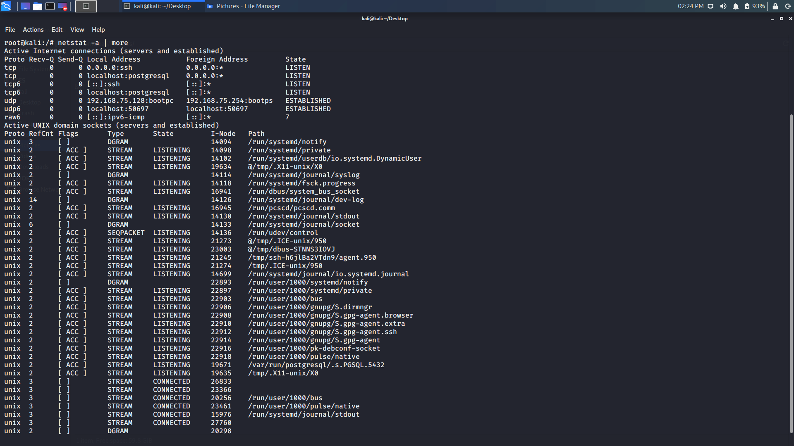

Linux
The netstat command generates displays that show network status and protocol statistics. It works in conjunction with the ifconfig command to provide a status condition of the TCP/IP network interface. netstat displays various types of network data depending on the command line option selected.
Some useful commands
netstat -a
This command shows both listening and non-listening sockets.
A listening socket is one where the server process is waiting for someone to connect to it.
A non-listening socket is one where a connection has been made, has connected, and data can be or is being transmitted.

netstat -at
This command lists all TCP ports.
netstat -au
This command lists all UDP ports.
netstat -l
This command lists only listening ports.
netstat -lt
This command lists only listening TCP ports
netstat -lx
This command lists only listening UNIX ports.

netstat -s
This command lists statistics for all ports.
netstat -st tcp
This command lists statistics for TCP ports.

netstat -su udp
This command lists statistics for UDP ports
netstat -c
This command displays netstat information continuously
netstat -verbose
This command displays the non-supportive address families in the system.
netstat -r
This command displays the kernel routing information.
netstat -ap | grep ssh
This command displays the port on which a program is running.
netstat -i
This command displays the list of network interfaces
netstat -ie
This command display extended information on the interfaces. It is very similar to ifconfig
netstat (network statistics) is a powerful command line tool for monitoring network connections both incoming and outgoing as well as viewing routing tables, interface statistics etc. Please give it a try and explore its